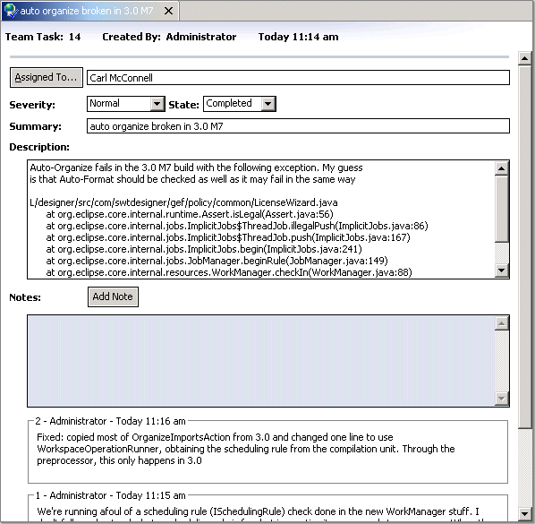
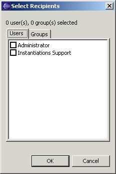
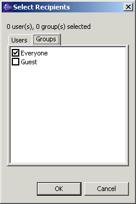

Collaboration Team Task EditorThis editor is for creating or editing a team task. The header shows the identifier, creator, and creation time of the task.  Assigned To Button This button opens a dialog for selecting the users and groups to which to assign the task. These are displayed in the field next to the button.   Severity and State Fields The severity field shows how important the task is considered to be. The state field shows the current state of the task. The value of each comes from a set of pre-defined values shown in the drop-down lists. Summary and Description Fields The summary field gives a brief description of the task, while the description field gives a more extensive one. Notes Area This area is used to compose, add, and display notes attached to the task. The Add Note button adds to the task whatever note has been composed in the note field. The existing notes are shown below the notes field. Notes are shown in chronological order or reverse chronological order based on the Team Task preference settings. |